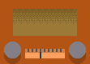
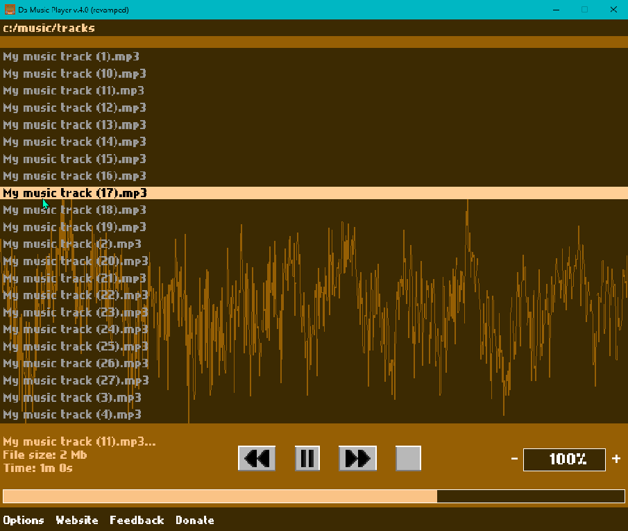
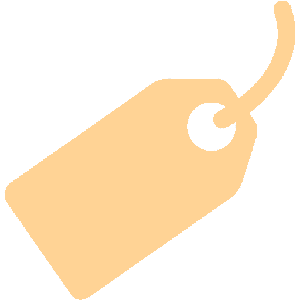

Da Music Player.exe

Home
Download
Feedback
Source-Code
Overview
Da Music Player is an open-source, retro, audio player tool. It includes some basic audio player features and is designed as a simple and lightweight solution to play your music. It is under development using C++ and the SFML library (for Graphics and Audio handling).
📖 See more
⬇️ Download
💸 Donate

About Da Music Player

Free
Da Music Player is a free (with an option to donate) side project application by Drimiteros.
Fast / Light
Da Music Player is made in C++20, using the SFML library to handle sound and graphics.
Open-Source
Da Music Player's heart is available to everyone. View and modify its source-code to your benefit!
💁 How to use
Open audio file manually:
1. Type a directory in the top menu and press enter.
2. Select the audio file you want to play with your mouse.
3. Use the mouse wheel to go up-down the track list.
4. Use the symbols to control playback and volume.
Set as default audio player:
1. Right click on a audio file.
2. Choose open as...
3. Find and select "Da music player revamped.exe"
4. Click "Always".